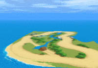
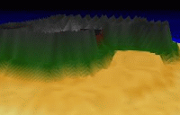

cellosoft.com
Справка: Содержание — Введение
cellosoft.com |
|
Введение в Mode 7 Ex Сначала я просто хотел бы приветствовать вас в Mode 7 Ex! Это расширение находилось в разработке в течение нескольких лет, и наконец то готово для любого использования которое Вы можете придумать. Если Вы уже пользовались Mode 7 Ex ранее, я надеюсь что Вы найдёте новую версию расширения более мощной и простой в использовании. Если Вам не терпится использовать новое расширение, я предлагаю сначала проверить Что нового в Mode 7 Ex.
Что такое mode 7? В простейшей форме, термин mode 7 относится к режиму графики на системе Super Nintendo (TM), используется среди прочего для создания псевдо 3Д игр. F-Zero или Mario Kart являются примерами некоторых коммерческих игр Nintendo, которые используют mode 7. Игры превратили плоские 2Д-карты в 3Д-окружение. Расширение Mode 7 Ex позволяет легко создавать карты и перемещаться вокруг них. Вы можете загрузить изображения в Mode 7 Ex и вращать его за считанные минуты!
Что такое 7 ex? После первого публичного бета-выпуска расширения mode 7, поступило множество предложений, исходя из них существует явная необходимость в дальнейшем развитии на основе концепции mode 7. Стремясь выйти за рамки основной идеи, я решил включить некоторые интересные концепции в Mode 7 Ex. Среди них поддержка ‘вокселей’, что позволяет создавать настоящее 3Д-окружение, интерполяция изображения и mip-mapping для высококачественной обработки и даже туман. Для получения полного списка новых возможностей, ознакомьтесь с новыми возможностями.
|
|
Mode 7 Ex права © 2000-2002 Marcello Bastéa-Forte и Cellosoft |